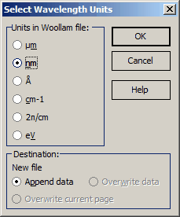

Woollam options
Woollam ellipsometer files are ASCII files organized in 6 columns:
Wavelength
Angle of Incidence
Psi
Delta
Tolerance for Psi
Tolerance for Delta

Modern Woollam ellipsometers measure both depolarization and transmittance. Depolarization measurements are recorded for each incidence angle after the Psi and Delta measurements in the Woollam files. The transmittance measurement files contain spectral units, the angle of incidence, transmittance values, and tolerances.
Woollam files do not contain information concerning wavelength units. For this reason, after opening a file in Woollam’s format, it is necessary to make a proper selection in the Units in Woollam file box, specifying the actual units for the wavelength in the Woollam file.
In the Destination field, the name of the data file being edited and the destination page are indicated. It is possible to:
append data
overwrite data in the existing file
overwrite the current page only.
After pressing the OK button, the data from the selected Woollam’s file will be automatically transformed to the OptiChar format and imported to the current page of the selected OptiChar Measurement file.
Note: In the case of XY-Scan Woollam files, when the file includes multiple measurements at different XY sample positions, OptiChar splits the data into several measurement files, one file for each measurement position. File names in this case include positioning information.